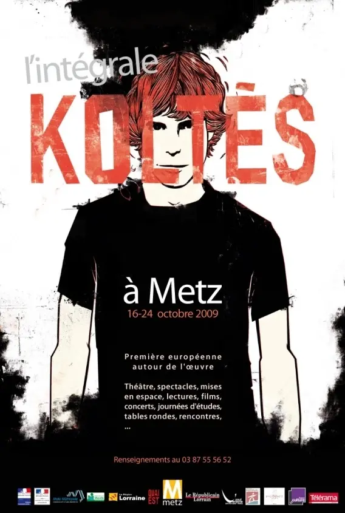

En 2009, la Ville de Metz souhaite commémorer les vingt ans de la disparition de Koltès. Elle confie à l’association Quai Est, nommée pour l’occasion, et à un comité scientifique le soin d’organiser deux grands ensembles d’événements.
Le premier, « Metz / Koltès, années 60 », se déroule du 21 au 25 avril. Le second, l’« intégrale Koltès », a lieu du 16 au 24 octobre sous la direction artistique de Michel Didym : pour la première fois, l’ensemble des pièces de l’auteur est présenté sous forme de spectacles, de mises en espace et de lectures-concerts, prolongés par des rencontres à la Maison Koltès, des films, des concerts, des activités scolaires et une exposition.
Le succès de l’intégrale a conduit l’association à organiser une Biennale tous les deux ans. Des tables rondes et journées d’études ont donné lieu à un volume collectif, Bernard-Marie Koltès : textes et contextes (Recherches Textuelles n° 10, 2009).


Programme
- 21 → 25
avrilPremier ensemble d’événements · Metz« Metz / Koltès, années 60 »
En liaison avec la publication des Lettres de Koltès aux Éditions de Minuit, un premier temps fait revivre le passé messin de l’auteur et ses débuts.
- Ven 16
oct.17 h 30 → 23 h 30Arsenal-Metz en Scènes · Théâtre du SaulcyInauguration de l’intégrale · « La Nuit juste avant les forêts » · baptême du Théâtre du Saulcy
Inauguration à l’Arsenal, spectacle d’Alain Françon et Michel Didym, puis baptême : le Théâtre du Saulcy devient Espace Bernard-Marie Koltès. « CorrespondanceS » (Jean de Pange) et la conférence-spectacle « De Succa à Zucco » (Jean-Pierre Ryngaert, Yves Borrini), puis concert After Koltès.
- Sam 17
oct.14 h → 23 h 30Théâtre du Saulcy · Université Paul Verlaine · ArsenalRencontre, journée d’études « De l’homme à l’œuvre » · « Le Jour des meurtres dans l’histoire d’Hamlet »
Rencontre avec Michel Didym et Pierre Diependaële, journée d’études universitaire, spectacle mis en scène par Pierre Diependaële et « La Nuit impatiente », spectacle déambulatoire.
- Dim 18
oct.17 h · 19 hCinéma Caméo-Ariel« Une autre solitude » · « La Nuit perdue »
Documentaire de Stéphane Metge, puis le film de Bernard-Marie Koltès La Nuit perdue.
- Lun 19 → mer 21
oct.Conservatoire · Théâtre du Saulcy · Opéra-Théâtre de Metz Métropole« Le Conte d’hiver » · « Des voix sourdes » · « Procès ivre » · « Sallinger » · « Quai Ouest »
Lecture-spectacle du Conte d’hiver (lundi) ; « Des voix sourdes » mis en scène par Bertrand Sinapi et « Procès ivre » par le Croate Ivica Buljan (mardi) ; « Sallinger » et « Quai Ouest » en lecture-spectacle (mercredi), avec des rencontres à la Maison Koltès.
- Jeu 22
oct.19 h · 21 hSalle Braun · Théâtre du Saulcy« L’Héritage » · « Combat de nègre et de chiens »
« L’Héritage » mis en scène par Jean de Pange ; « Combat de nègre et de chiens » par le metteur en scène hongrois Sandor Zsoter.
- Ven 23
oct.11 h → 23 hUniversité Paul Verlaine · Opéra-Théâtre · Théâtre du Saulcy · ArsenalConférence de David Bradby · table ronde · « Le Jour des meurtres… » (opéra) · « Dans la solitude des champs de coton » · « La Marche »
Conférence sur la traduction de l’œuvre en anglais, table ronde sur les mises en scène, opéra de Pierre Thilloy, spectacle de Carlos Alvarez-Ossorio (Espagne), « La Marche » (Michel Didym) et « Le Retour au désert » en lecture-spectacle.
- Sam 24
oct.9 h → 23 hUniversité Paul Verlaine · Maison Koltès · Arsenal · Opéra-ThéâtreJournée d’études « La dramaturgie de Koltès » · « Tabataba » · « Coco » · « Roberto Zucco » · « Nickel Stuff »
Journée d’études, rencontre avec Christiane Cohendy, « Tabataba » (Moïse Touré), « Coco », « Traversée du théâtre de B.-M. Koltès » (La Mandarine Blanche), « La Famille des orties » (Stanislas Nordey), « Roberto Zucco » mis en scène par Christophe Perton (Comédie de Valence), concert et « Nickel Stuff » en lecture-spectacle-concert.
- 2 → 30
oct.Bibliothèque universitaire du Saulcy, MetzExposition « Koltès, étranger dans le monde »
Exposition accompagnant l’intégrale.